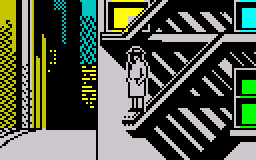
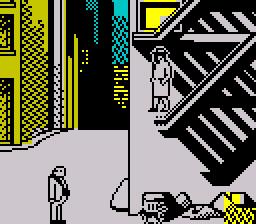
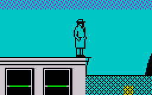
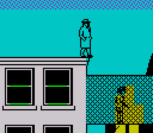
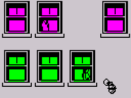

The walkthrough that follows is not the only way to complete the game, nor
is it necessarily the quickest; however, it is an attempt to list the game's
important events in a logical order, and includes every cash bonus and phone
message that it's possible to receive.
Before the game starts, a cutscene is displayed: '...THE PHONE RANG. IT WAS
A DAMED NAMED LANA. SHE SAID TO MEET HER ON THE TOP FLOOR OF THE HOTEL ROYALE.
SO BEGAN THE CASE OF THE BALI BUDGIE'
Go to the top floor of the hotel and proceed to the room on the far left; as
you approach the entrance, note the message that is displayed: 'THERE'S A MAN'S
BODY ON THE FLOOR'
Continue walking into the room and collect the $100 cash bonus
Pick up the ringing telephone and note the message: 'A VOICE SAID 'ED - TELL
THE OIL MAN THAT THE KEY TO THE FAT MANS HOUSE IS AT NO 31 AND THAT THE BOSS
WANTS TO SEE YOU BOTH AT NO 19''
Wait for the police to arrest you and put you in jail
After you've been released from jail, go to the room above the cell in the
police station, pick up the phone, dial 7337, and note the message from Daisy:
'DAISY SAID 'LANA RANG - SHE HAD TO GET OUT IN A HURRY - OH AND I HEARD NOISES
IN THE CEILING''
Hang up the phone
If the score is not yet at least 50, wait around until it is
Pick up the phone, dial 7337, and note the message from Daisy: 'DAISY SAID
'LANA RANG - HER NEW NUMBERS 7162. THE POLICE WERE HERE''
Hang up the phone
Pick up the phone and dial 7162; when asked who's there, press 'S', and note
the message from Lana: 'LANA ANSWERED 'OOH SAM! THEY KILLED MY FIANCE AND STOLE
THE BUDGIE''
Hang up the phone
Pick up the phone, dial 7162, and note the message from Lana: 'LANA ANSWERED
'OOH SAM! THAT CROOK THE FAT MAN'S JUST MOVED INTO NO 15''; now we know that
the key at no. 31 must be for no. 15 (the Fat Man's house)
Hang up the phone
Go to the roof of the police station and step off the left edge onto the roof
of no. 31 (entering no. 31 this way instead of by the front door means the
police won't arrest you)
Go down to the left end of the middle floor of no. 31 and pick up the key (this
is the key to no. 15)
Leave no. 31 and head for no. 19
Outside no. 19, change disguise to the oil man (press 'D' seven times):
Knock on the door to no. 19 and enter when the gangster opens it
Pick up the $50 cash bonus on the ground floor (by the window on the right)
Go up to the top floor of no. 19
Pick up the ringing telephone; when asked who's there, press 'E' and note the
message: 'OK ED - THE FAT MAN HAS THE KEY TO NO 27'
Hang up the phone
Leave no. 19, go to no. 15, and enter using the key
Head for the second floor of no. 15
A cutscene is displayed: 'IT ALL WENT BLACK. AS I FELL SOMEONE FAT PUSHED
PAST ME SHOUTING ' YOULL NOT GET THE KEY WHEN I'M STILL STANDING''
Pick up the ringing telephone, and note the message from Daisy: 'DAISY SAID
'SAM - A GANGSTER'S WATCHING FOR YOU OUTSIDE THE POLICE STATION''
Hang up the phone
Wait for the phone to start ringing again, pick it up, and note the message:
'A VOICE SAID 'OK FATS THE HOOK'S AT NO 74 AND ALS GUARDING IT''
Hang up the phone
Pick up the phone, dial 7337, and note the message from Daisy: 'DAISY SAID
'LANA RANG - THAT FAT MAN HAS TWO KEYS NOT JUST ONE ''
Hang up the phone
Pick up the phone, dial 7162, and note the message from Lana: 'LANA ANSWERED
'OOH SAM! BUD SAID HE'D MEET ME ALONE IN THE HOTELS RIGHT HAND GREEN ROOM. I'M
SCARED - WILL YOU GO INSTEAD?''
Hang up the phone
Go up to the top floor of no. 15 and pick up the key (this is the key to no.
31; you should now have two keys)
Go down to the second floor of no. 15 and pick up the $100 cash bonus
Leave no. 15, go to the roof of the apartment building next to no. 19, and walk
down to the bottom of the fire escape:

Wait until the Fat Man approaches and then, at the right moment, step off the
fire escape and down onto the Fat Man's head:

Walk past the stunned Fat Man towards no. 27 and pick up the key that he has
dropped (this is the key to no. 27; you should now have three keys)
Go to no. 27 and enter using the key
Go to the roof of no. 27, walk over to the roof of the police station, and then
step off the left edge onto the roof of no. 31 (thus avoiding the gangster who
is watching for you outside the police station)
Go down to the ground floor of no. 31, leave through the front door, and go to
the right hand green room on the fourth floor of the hotel
Change into the female disguise (press 'D' four times):
Pick up the ringing telephone and note the message: 'A VOICE SAID 'OK LANA THE
KEY TO 74'S IN THE ROOM PAST THE CATWALK BUT THERE'S A GUARD''
Hang up the phone
Leave the hotel and head for the roof of the apartment building next to no. 74
A cutscene is displayed: 'SOMEONE HIT ME. I PLAYED DEAD. TWO MEN WALKED OFF.
ONE SAID 'HEY DON AINT YOU SCARED THAT CRUISE WILL GET UP TO YOUR ROOM WHEN ALS
ON THE PHONE ?''
Stand on the right edge of the roof of the apartment building next to no. 74:

At the right moment, step off the roof and down onto the gangster pacing the
catwalk:

While the gangster is stunned, go to the room to the right of the catwalk and
pick up the key (this is the key to no. 74; you should now have four keys)
Walk back through the catwalk and go down a floor to the magenta room on the
right
Pick up the phone, dial 7337, and note the message from Daisy: 'DAISY SAID 'ALS
NUMBER'S 6124''
Leave the apartment building, go to no. 74, and enter using the key
Pick up the phone on the ground floor of no. 74, dial 6124, wait a second, hang
up, and then go to the top floor of no. 74 (Al won't get you because he's gone
to answer the phone)
Pick up the hook (on the right; press 'G') and the $100 cash bonus (on the
left)
Go down to the left-hand room on the third floor of no. 74
Pick up the ringing telephone; when asked who's there, press 'D', and note the
message: 'TECHNICAL SERVICES HERE. TO USE A HOOK GET TO RIGHT PLACE AND PRESS
C'
Hang up the phone
Pick up the phone, dial 999, and wait for the police to arrive and take you to
the jail cell (thus avoiding Al on the way out of no. 74, and also avoiding the
gangster watching for you outside the police station)
After you've been released from jail, go to the roof of the police station,
step over to the roof of no. 27, and then go down and leave no. 27 through the
front door (thus avoiding the gangster who is watching for you outside the
police station)
Go to the roof of the apartment building next to no. 19 and stand on the right
edge, facing right:
Press 'C' to throw the hook
When the rope appears, walk across it to the roof of no. 17; note the message
that is displayed: 'SOMEONE BELOW SAID 'CRUISE WAS DRESSED AS THE OIL MAN. DONT
LET ANYONE PAST'' (at this point the oil man disguise will no longer work at
no. 19)
Go down into the room above Sam's office and walk towards the far left wall;
note the message that is displayed: 'THERES A SAFE WITH 4 LOCKS'
Continue walking to the left and pick up the $200 cash bonus
Continue walking to the left and pick up the budgie (press 'G')
Go back to the roof of no. 17 and step down onto the roof of no. 19
Walk left until you find the fuse
Blow the fuse (press 'F'), go down to the ground floor, and leave no. 19
through the front door
Go to Sam's office
Pick up the phone, dial 7162, and note the message: 'LANA ANSWERED 'OOH SAM!
YOUVE GOT THE BIRD. SEE YOU IN YOUR OFFICE''
Hang up the phone
Wait until Lana has climbed the stairs up to the second floor of no. 17, and
then pick up the phone and dial 999:

When Lana arrives at Sam's office, a message is displayed: 'I STARED AT THE
LOVELY LANA WAS IT THOSE RUBY LIPS OR THE SLIM AUTOMATIC THAT TRANSFIXED ME?
SHE SAID 'THANK YOU FOR THE BUDGIE SAM . ITS PRICELESS. IVE ALREADY KILLED ONCE
FOR IT. AND NOW ITS GOODBYE SAM ''
A cutscene is displayed: 'SHE'S IN JAIL NOW. ANOTHER CASE SOLVED. BUT NOW
THE MOB KNOWS IVE GOT THE BUDGIE AND THEYRE AFTER ME . .'
Wait for the gangster to come and get you, again and again and again...